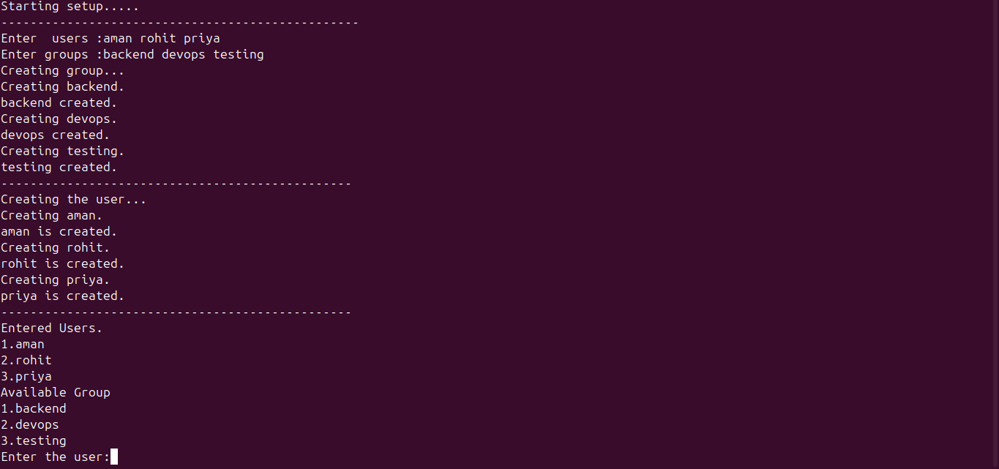

My Work
USB-Auto-mount-Project-Linux--Mini
Linux USB Automation Tool is a Bash scripting project that automates USB storage management tasks such as
- Linux
- Bash Scripting


Linux-Team-Access-Provisioning-Script
This Bash scripting project automates Linux team environment setup by creating users, groups, assigning users to groups, creating project directories, and configuring folder permissions.
- Linux
- Bash Scripting

ShellBridge
ShellBridge is a Bash-based secure local network file transfer utility designed for Linux/macOS environments. The project automatically scans the local network, detects active devices, allows the user to select a target device, configures SSH authentication, and securely transfers files using SCP.
- Linux
- Bash Scripting

About Me
I am a Computer Science student passionate about Linux, DevOps, networking, and system automation. I enjoy building practical projects that help me understand how real systems work behind the scenes. My current learning journey focuses on Linux administration, Bash scripting, Docker, networking, and backend fundamentals. I have worked on projects involving SSH-based secure file transfer, Linux automation, user and group management, and server deployment using Nginx. I believe in learning by building, debugging, and improving real-world projects step by step.
My Resume